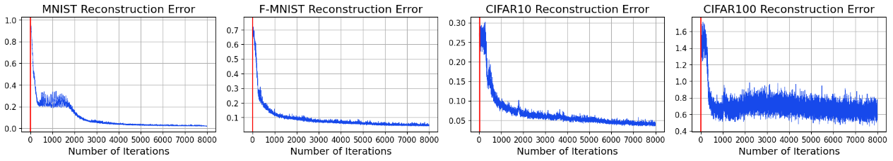

Split learning lets clients train deep neural networks with a central server without sharing raw data. A malicious server can hijack training and reconstruct private data or plant backdoors in client models. Earlier defenses detect such training-hijacking attacks but rely on many heuristics and many tuned hyperparameters.
SplitOut is a simple passive detector that runs on the client side. Clients briefly train the full model locally on a small fraction (e.g., 1%) of their private data and collect honest gradients. We train an off-the-shelf Local Outlier Factor (LOF) model on these gradients. During real split learning, LOF flags incoming server gradients as inliers (honest) or outliers (hijacked).
We evaluate SplitOut on MNIST, Fashion-MNIST, CIFAR-10, CIFAR-100, and EMNIST. It detects all existing split learning training-hijacking attacks we test, with almost-perfect true positive rates and near-zero false positives, often within the first epoch. The method needs only modest additional client compute and no attack-specific tuning.
SplitOut is a client-side, passive detector for training-hijacking attacks in split learning.
We use LOF with the maximum feasible number of neighbors, and we rely only on honest gradients collected once before deployment. No attacker behavior is modeled and no attack-specific features are needed.
On FSHA, SplitSpy, and backdoor attacks, SplitOut reaches true positive rate (TPR) ≈ 1 and very low false positive rate (FPR). On MNIST and Fashion-MNIST it detects all attacks with TPR = 1 and FPR = 0. On CIFAR-10 and CIFAR-100, FPR is small and drops to zero when we allocate more data to LOF training.
SplitOut detects feature-space hijacking attacks very early in training. The detector fires long before the attacker can reconstruct readable private images or install a strong backdoor.
Reconstructions obtained when SplitOut is active have almost zero SSIM with the original inputs, compared to high SSIM when FSHA runs without detection.
Red lines represent where the attack (FSHA) is detected.
Gradients live in a very high-dimensional space, but honest and malicious gradients form very different neighborhoods. t-SNE plots show honest gradients forming a tight, dense cluster. Malicious gradients spread over a larger region and largely surround the honest cluster.
This structure is exactly what local density-based methods such as LOF exploit. Honest points sit in dense neighborhoods; hijacked gradients have sparser and more mixed neighborhoods and receive higher LOF scores.
Pair-wise average L2 distances between sets of honest and malicious gradients on CIFAR-10 reveal the same picture:
These geometric properties explain why a neighborhood-based outlier detector like LOF can separate honest and hijacked gradients despite the curse of dimensionality.
Similar t-SNE plots on F-MNIST and EMNIST show the same pattern: honest gradients cluster tightly, while malicious gradients cover a broader region around them.
SplitOut assumes:
We evaluate feature-space alignment attacks: FSHA, SplitSpy, and a backdoor attack, plus a multitask FSHA that mixes honest and adversarial losses. SplitOut also detects the adaptive SplitSpy attacker that is designed to bypass SplitGuard.
Limitations include possible new training-hijacking strategies that do not rely on feature-space alignment and attacks that start only after several epochs of honest training. Detecting such attacks may require more LOF training data or different detectors and is an open direction for future work.
@misc{erdogan2024splitoutoutoftheboxtraininghijackingdetection,
title={SplitOut: Out-of-the-Box Training-Hijacking Detection in Split Learning via Outlier Detection},
author={Ege Erdogan and Unat Teksen and Mehmet Salih Celiktenyildiz and Alptekin Kupcu and A. Ercument Cicek},
year={2024},
eprint={2302.08618},
archivePrefix={arXiv},
primaryClass={cs.LG},
url={https://arxiv.org/abs/2302.08618}
}